Description of the addon
Launch the Rational Production software.
- To start working, load the required layout.
- The layout must contain the component «MoCap Operator (Name) WPP», which can be found in the electronic catalog «PM MoCap» (Fig. 1).
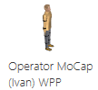
Figure 1 – MoCap operator in the electronic catalog
- In the «Program» tab, find the «Ergonomics» section, select the «Ergonomics WPP» tool (Fig. 2-3).
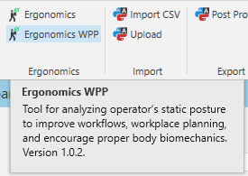
Figure 2 – New section «Ergonomics WPP» in the «Programming» tab
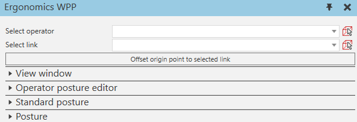
Figure 3 – Addon appearance
- Next, you need to select the operator. You can select it using the drop-down list or from the layout (Fig. 3).
- To manipulate any link of the operator, you need to select the link. You can select it using the drop-down list or from the layout (Fig. 3). You can also control the list using the key combinations Ctrl + J (back) and Ctrl + K (forward).
- The button "Offset origin point to selected link" helps to move the starting point of the component to the selected link (Fig. 3).
- It is possible to change the display of the operator on the layout, go to the «Display» tab and select the desired settings (Fig. 4-10).
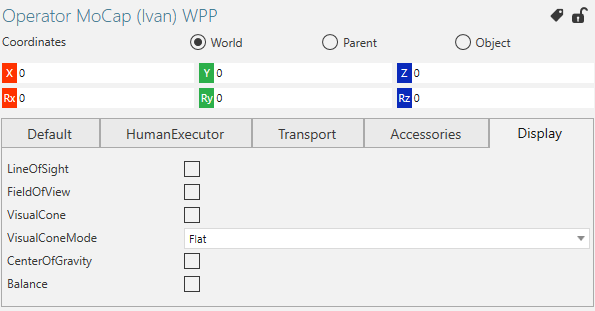
Figure 4 – Operators «Display» tab

Figure 5 – «Line of sight»

Figure 6 – «Field of view»

Figure 7 – «Visual Cone»
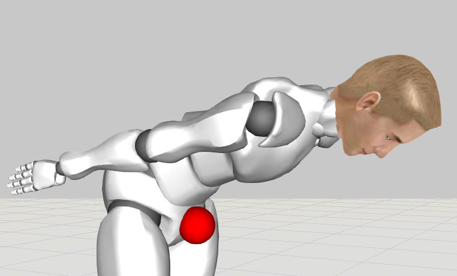
Figure 8 – «Center of gravity»

Figure 9 – «Balance»
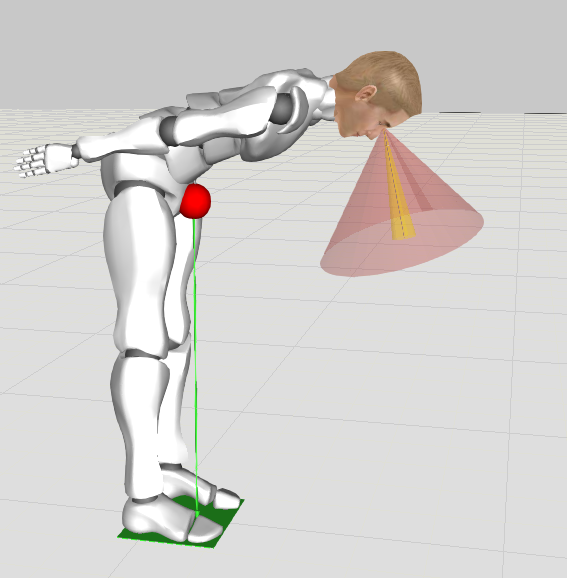
Figure 10 – All together
- The «View window» tab is designed to view the operator's first-person view in a separate window (Fig. 11). Click the "Open view window" button to see POV of the operator.
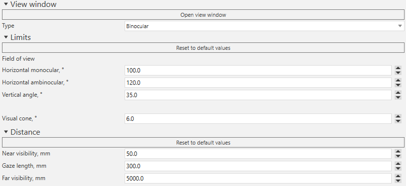
Figure 11 – «View window» tab
- The «Limits» tab is responsible for setting up different viewing angles, the «Distance» tab is responsible for setting up the viewing range and focus point (Fig. 11).
- It is also possible to select different view types (Fig. 12-16).
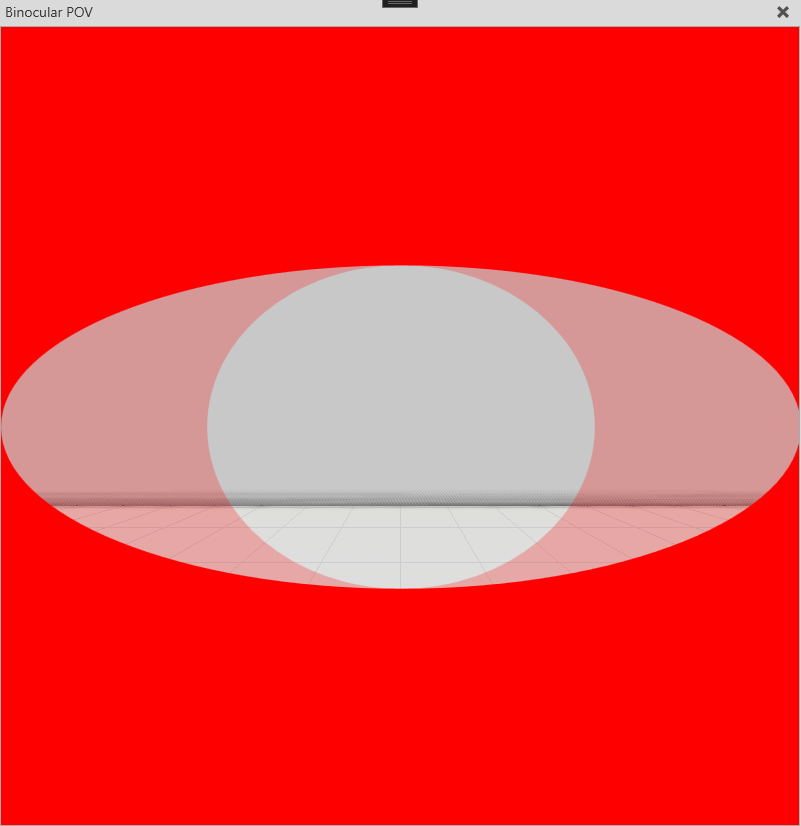
Figure 12 – Binocular
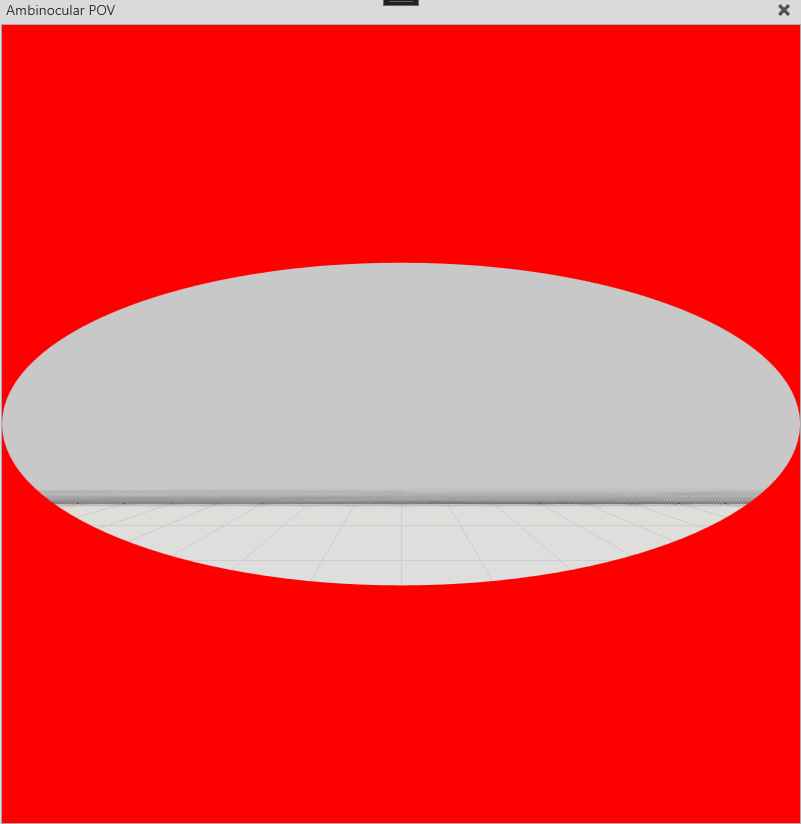
Figure 13 – Ambinocular
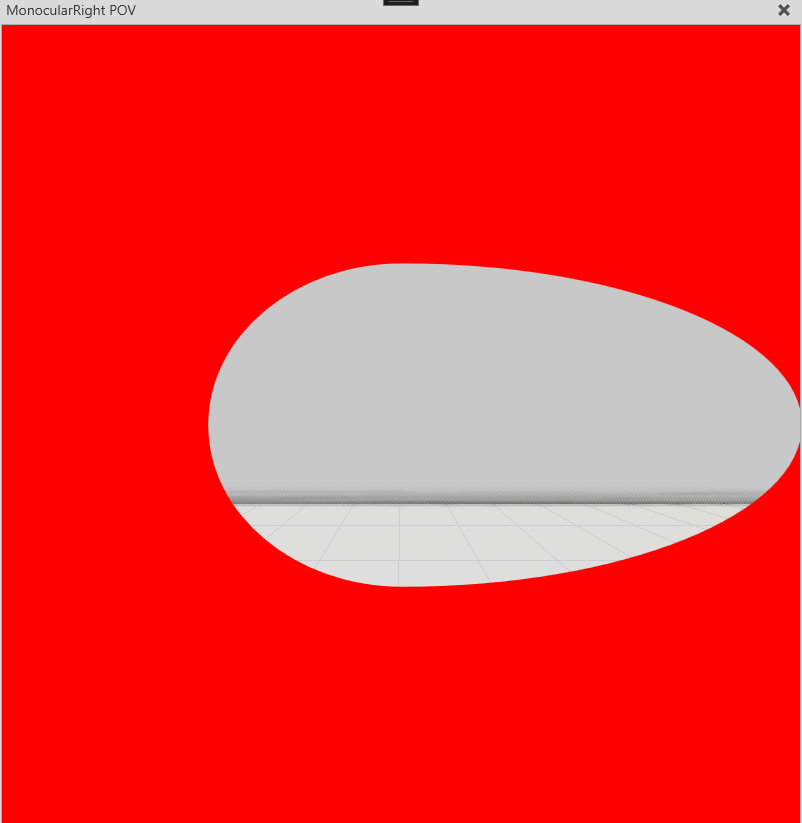
Figure 14 – Monocular right
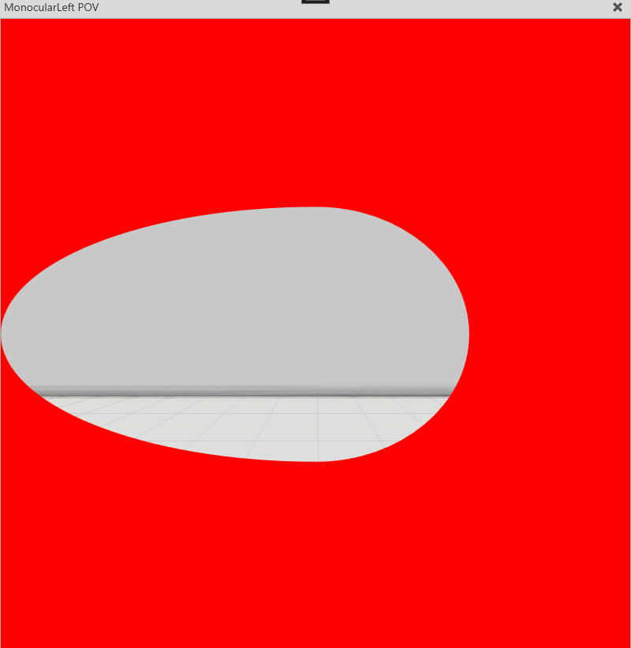
Figure 15 – Monocular left
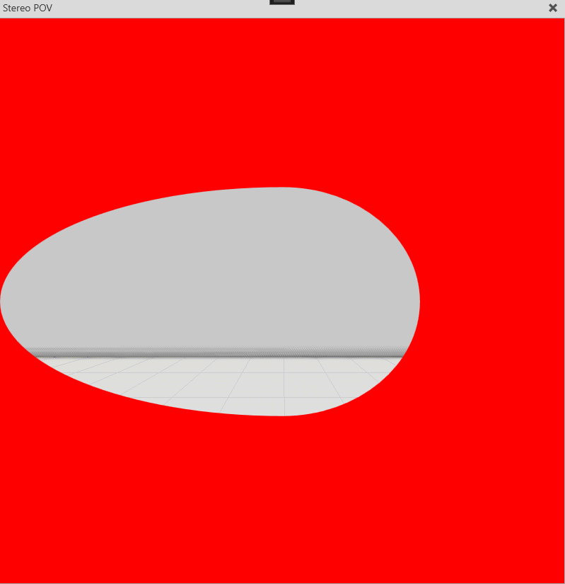
Figure 16 – Stereo
- The «Operator posture editor» tab helps us turn on/off the manipulator. The key combination also turns on/off the manipulator Ctrl+M (Fig. 17). The selected node will be displayed below the «Initial posture» tab and will show the current rotation angles of the body part.
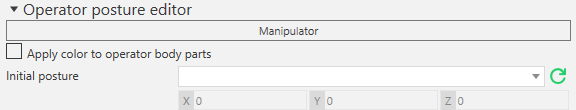
Figure 17 – «Operator posture editor» tab
- The drop-down list «Initial posture» allows you to set the operator's initial pose. There is a refresh button (Fig. 18-23).
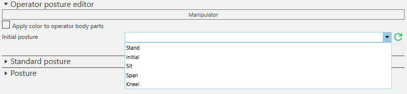
Figure 18 – «Operator posture editor» tab after selecting the operator and link

Figure 19 – Stand

Figure 20 – Initial
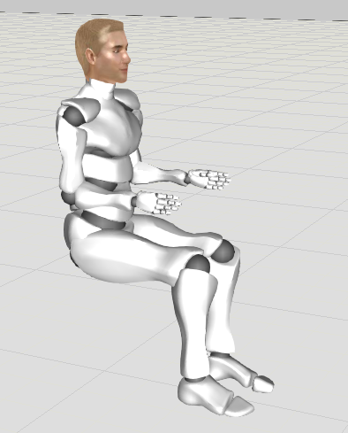
Figure 21 – Sit

Figure 22 – Span
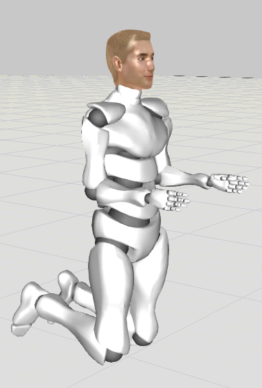
Figure 23 – Kneel
- The manipulator allows working with various parts of the operator's body, all movement options are highlighted simultaneously, limiting angles, and parts of the manipulator are highlighted based on the results of the ergonomics assessment (Fig. 24-25).
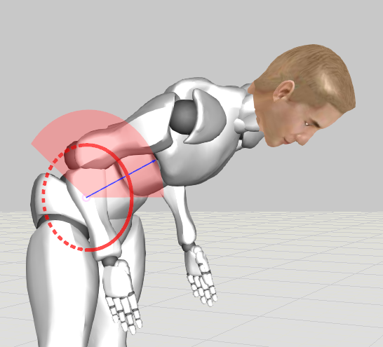
Figure 24 – Interaction with the manipulator
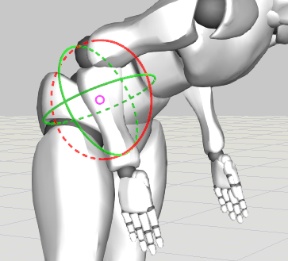
Figure 25 – Manipulator without interaction
- To avoid incorrect operation with the operator, it is recommended to avoid changing the rotation angles in the «Jog» tab.
- When working with the Pelvis_R link, the hip angle changes opposite to the pelvic rotation to maintain the vertical position of the operator model.
- The «Apply color to operator body parts» checkbox is responsible for displaying the ergonomics assessment in color directly on the operator (Fig. 26).
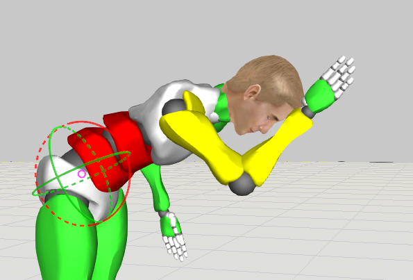
Рисунок 26 – Apply color to operator body parts
- The «Standard posture» tab helps us put the operator in a certain pose, which can be edited more conveniently (Fig. 27-34). The «Maintain gaze direction» button allows you to keep the head in a certain direction unchanged up to maximum angles.
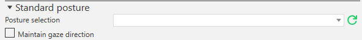
Figure 27 – «Standard posture» tab
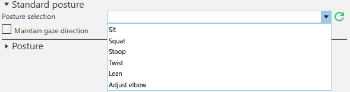
Figure 28 – The «Standard posture» tab after selecting the operator
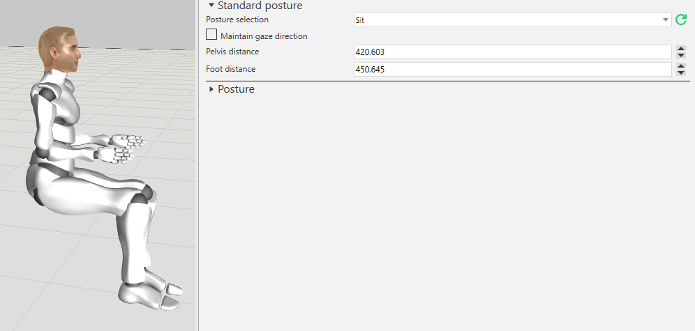
Figure 29 – Sit
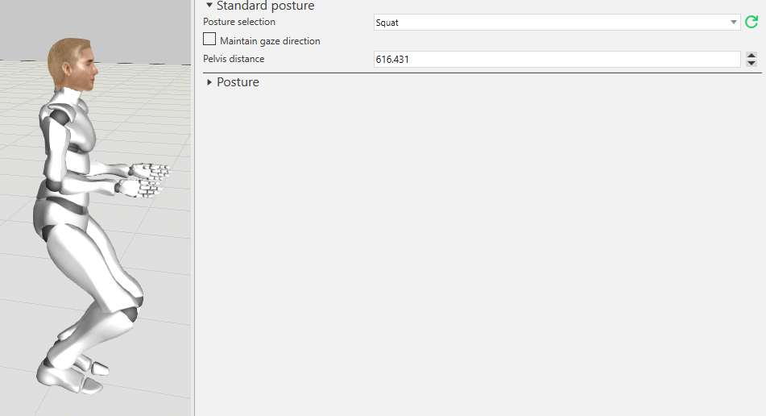
Figure 30 – Squat
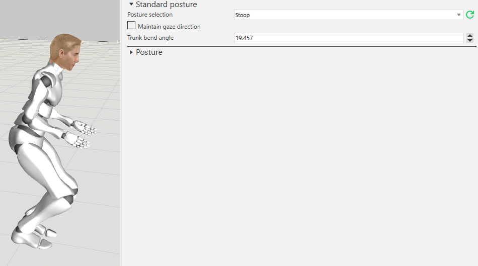
Figure 31 – Stoop
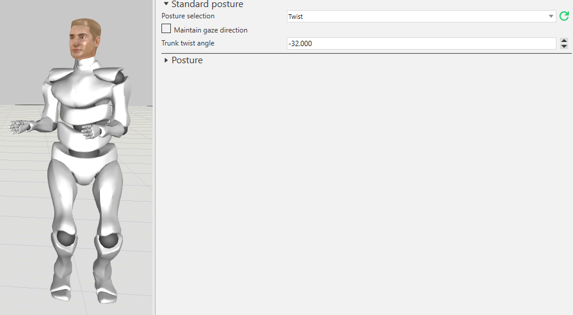
Figure 32 – Twist
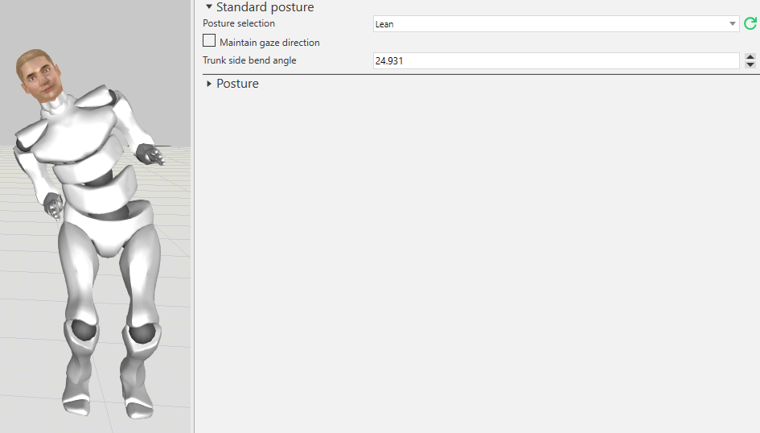
Figure 33 – Lean
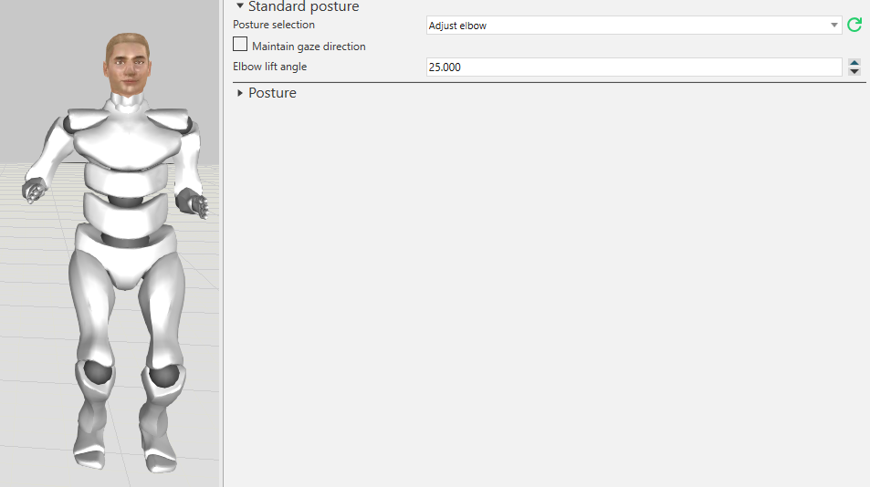
Figure 34 – Adjust elbow
- The "Posture" tab allows you to evaluate the current static pose of the operator. The result is presented in the form of a table (Fig. 35) (Table 1-2). Here you can select whether the operator has a comfortable support, the duration of being in this pose in seconds, weight/effort in kilograms.
- The «Get posture assessment report» button writes all input data and ergonomics assessment results in .pdf format (Fig. 36).
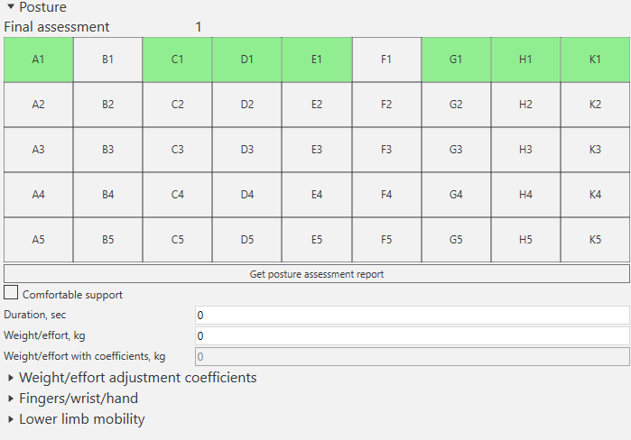
Figure 35 – «Posture» tab
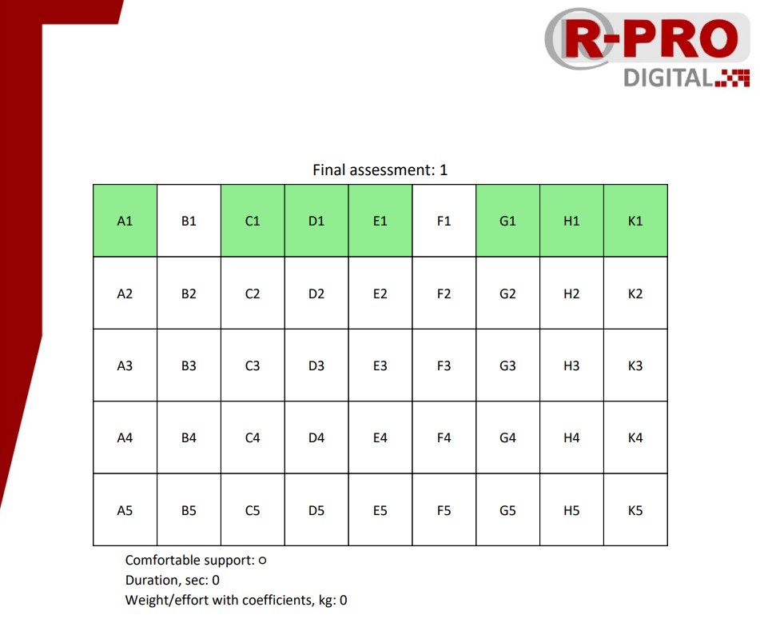
Figure 36 – «Posture» tab
Table 1 – Posture
TRUNK |
HEAD |
UPPER LIMBS |
LOWER LIMB MOBILITY |
LEVEL |
|||||
BEND |
SIDE BEND |
TWIST |
HAND / WRIST |
FINGERS/ WRIST/ HAND |
|||||
Without support or duration > 2 sec or effort > 2 kg |
- With support (1) and - duration ≤ 2 sec and force ≤ 2 kg |
duration > 5 sec or effort > 2 kg |
duration ≤ 5 sec and- effort ≤ 2 kg |
||||||
A1 No bend |
B1 0° α 10° |
C1 No side bend |
D1 No twist |
E1 No flexion, extension, rotation, bend |
F1 - Arm < 30°, Hand below heart level |
G1 Arm < 30° Hand at heart level |
H1 No significant wrist flexion or extension < 10° |
K1 |
1 |
A2 <10° |
B2 10° α 30° |
C2 <10° |
D2 <20° |
E2
|
F2 Arm < 30° Hand at heart level |
G2 Arm 30-90° Hand at shoulder level |
H2
|
K2 |
2 |
A3 10° α 30° |
B3 30° α 60° |
C3 10° α 30° |
D3 20° α 40° |
E3
|
F3 Arm 30-90° Hand at shoulder level |
G3 - Hand at head level - Arm extended forward at height |
H3 - Simple tacking - Simple filing |
K3 - Climbing or descending 1 or 2 steps (300 mm) or one obstacle ≤ 170 mm hands free |
3 |
A4 30° α 60° (2) |
B4 60° α 90° (2) |
C4 30° α 60° (2) |
D4 40° α 60° (2) |
E4 - Gaze up 40 - 60° duration > 5 sec - Turn 45°-90° (45°- 60°) - Tilt to the side (0° - 30°) (2) |
F4 - Hand at head level - Arm extended forward at height (2) |
G4 - Hand above head - Arm extended to side > 45° - Shoulder or elbow raised (2) |
H4 - Wrist flexion or extension > 60° - Hand strike without complex fixation (2) - Simple use of hammer or mallet - Repetitive hand-forearm-elbow rotations including complex tacking or complex filing - Strong screwing |
K4 - Squatting or half-bent legs ≤ 5 sec - Moving sideways > 30% Tc - Moving backwards ≤ 30% Tc - Ascent/descent or obstacle ≤ 300 mm hands busy - Rise or obstacle between 300 mm and 500 mm (4) |
4 |
A5 - ≥ 60° - Backward bend |
B5 - ≥ 90° - Backward bend |
C5 ≥ 60° |
D5 ≥ 60° |
E5 - Severe backward or gaze ≥ 60° - Turn ≥ 90° (≥ 60°) - Severe sideways tilt ≥ 30° or forward |
F5 - Hand above head - Arm extended to side > 45° - Shoulder or elbow raised |
G5
|
H5 - Wrist flexion or extension > 60° and effort > 3 kg - Hand strike with complex fixation - Repetitive use of hammer or mallet - Risk of joint diseases |
K5 - Squatting or half-bent legs > 5 sec - Kneeling or sitting on the floor in cargo bed - Moving backwards > 30% Tc - Movement > 20 m/min - Ascent/descent of 3 steps with bulky load - Obstacle height > 500 mm (4) |
5 |
(1) Examples of comfortable support:
- Between the upper thighs and the navel,
- Support on the palm of the hand,
- The ability to spread the legs wide.
No backward or sideways movement.
(2) If the body position is from 2 restrictions at the same time, add 1 level.
(3) If operators wear protective gloves, reduce the rating by one level.
(4) For logisticians and, in particular, forklift operators, reduce the restriction by one level if there is a handle for lifting/lowering.
Table 2 – Additional assessment fingers/wrist/hand
Good contact area |
Bad contact area |
<30 |
30≤α≤60 |
>60 |
≤3 kg |
≤2 kg |
H2 |
H3 |
H4 |
3<α≤6 kg |
2<α≤4 kg |
H3 |
H4 |
H5 |
6<α≤10 kg |
4<α≤6 kg |
H4 |
H5 |
H5 |
>10 kg |
>6 kg |
H5 |
H5 |
H5 |
- The «Weight/effort adjustment coefficient» tab is needed to adjust the weight under certain conditions (Fig. 37-38) (Table 3).
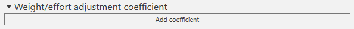
Figure 37 – «Weight/effort adjustment coefficient» tab
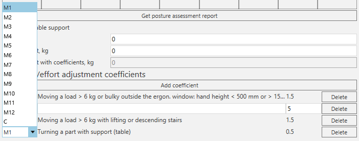
Figure 38 – «Weight/effort adjustment coefficient» tab
Table 3 – Weight/effort refinement coefficients
Weight and effort adjustment factor Adjustments are applied only to loads > 2 kg. If two or more weight factors (except M1 and M2) are applied simultaneously to the same weight adjustment, factor 2 is applied. |
Coefficient |
|
M1 |
Turning a part with support (table) |
0,5 |
M2 |
Pushing aids with good support on a non-slip floor |
0,7 |
M3 |
Turning a load without support |
1,5 |
M4 |
Moving a load with spread (> 1000 mm) or extended arms (> 500 mm) |
1,5 |
M5 |
Positioning or gripping with prolonged holding in the air with one hand |
1,5 |
M6 |
Load is non-rigid, without a handle, or with an offset center of gravity |
1,5 |
M7 |
Moving a load > 6 kg or bulky outside the ergonomic window: hand height < 500 mm or > 1500 mm. Bulky: a part whose height, width, or depth exceeds 1000 mm, except light and flexible items (cables, hoses, etc.). |
1,5 |
M8 |
Moving a load > 6 kg with fingertips or one hand |
1,5 |
M9 |
Moving a load > 6 kg with lifting or descending stairs |
1,5 |
M10 |
Moving a load > 6 kg with forced displacement of more than 5 m |
1,5 |
M11 |
Exertion by abduction with one hand (arm or wrist abduction outward) |
2 |
M12 |
Lifting a load while sitting |
2 |
C |
In special cases, after consultation with an expert, it is possible to include special conditions that are not included in this table. |
Any |
- The «Fingers/wrist/hand» and «Lower limb mobility» tabs are needed to set the input conditions for the static pose (Fig. 39-40).
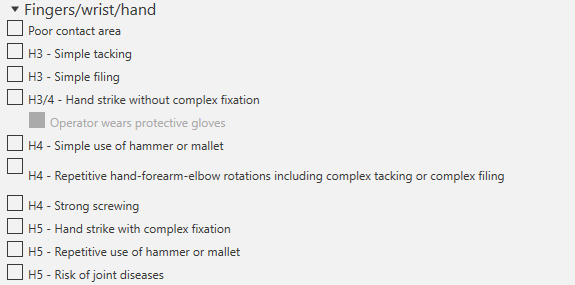
Figure 39 – «Fingers/wrist/hand» tab
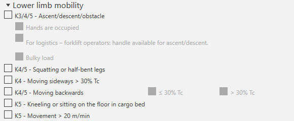
Figure 40 – «Lower limb mobility» tab